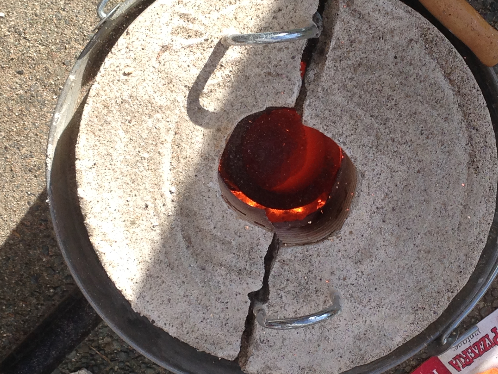
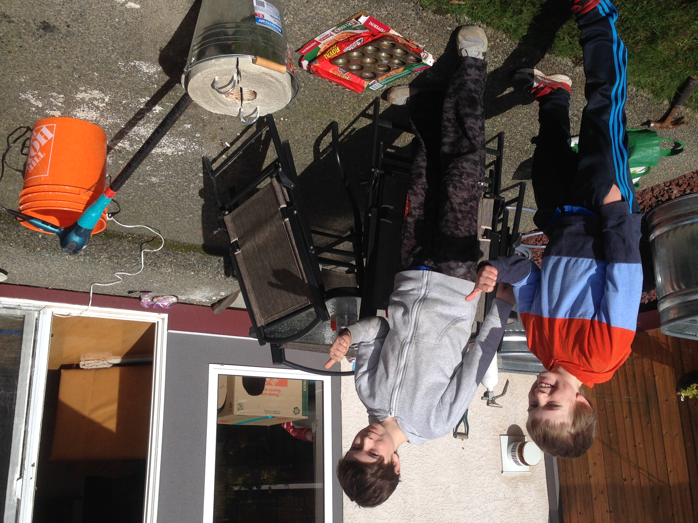

Mini Metal Foundry
Overview
Inspired by a YouTube video, my brother and I built a simple metal foundry in our backyard from plaster of paris, a steel pipe, and a metal bucket.
Powered by a hair dryer and charcoal, it was hot enough to melt down aluminum cans. We used this molten aluminum and a baking tin to create cast aluminum ingots.
Media
Active foundry

Setup
